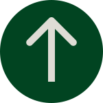

PROJEKT 4
GRUNDLÆGGENDE INDHOLD
I dette tema blev vi introduceret til Photoshop, After Effects og Lottiefiles. Vi lærte blandt andet, hvordan man kan skabe en interaktiv 404-side ved hjælp af animationer fra Lottiefiles. Som en del af projektet skulle vi i grupper redesigne et website for en virksomhed, som vi selv kontaktede for at få input og feedback.
PROCESSEN
I min gruppe kontaktede vi virksomheden Sex Beat Records, en lille pladebutik i det indre København. Vi interviewede ejeren for at få indsigt i hans baggrund, butikkens koncept samt hans ønsker og krav til et redesign af den nuværende hjemmeside. Vi organiserede vores arbejde gennem Trello, hvor vi fordelte opgaver og fulgte projektets fremdrift. For at sikre løbende koordinering holdt vi daglige SCRUM-møder, hvor vi opdaterede hinanden om status og udfordringer. Desuden benyttede vi GitHub til versionsstyring og samarbejde omkring koden, hvilket gjorde det nemt at integrere og følge hinandens arbejde. Projektforløbet fulgte de velkendte faser: research, design, kodning, test og til sidst en afsluttende præsentation.

LÆRING
Det har været lærerigt at arbejde som et team, hvor jeg har fået indsigt i både mine egne styrker og svagheder i gruppearbejde samt i andres arbejdsmetoder. Desuden har det været en værdifuld erfaring at samarbejde med en virksomhed og tilpasse designet efter kundens behov og krav fremfor blot egne præferencer. En vigtig del af læringen har været at bruge GitHub til gruppearbejde. Jeg har fået en bedre forståelse for, hvordan man koordinerer arbejdet med kode i en gruppe, og hvordan man undgår konflikter og sikrer, at alle kan bidrage med hver deres kode.
LØSNING
Her kan du finde den endelige løsning, hvor alle elementer er samlet og implementeret. Klik på linket nedenfor for at se den endelige site.
emilieerikson.dk 